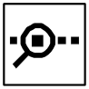
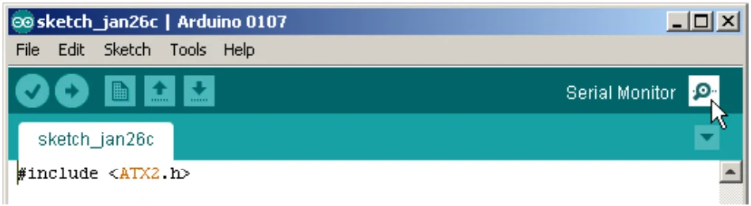
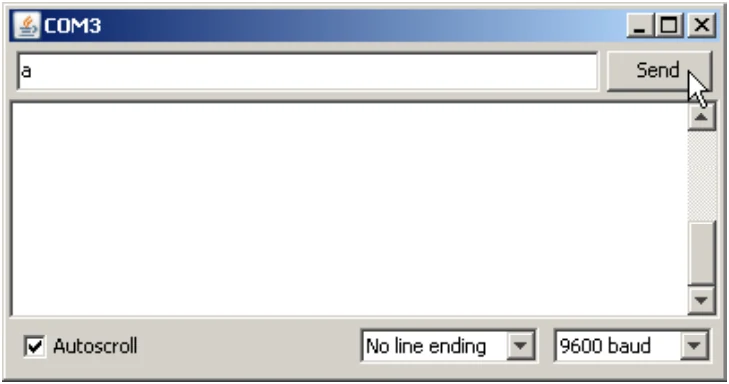
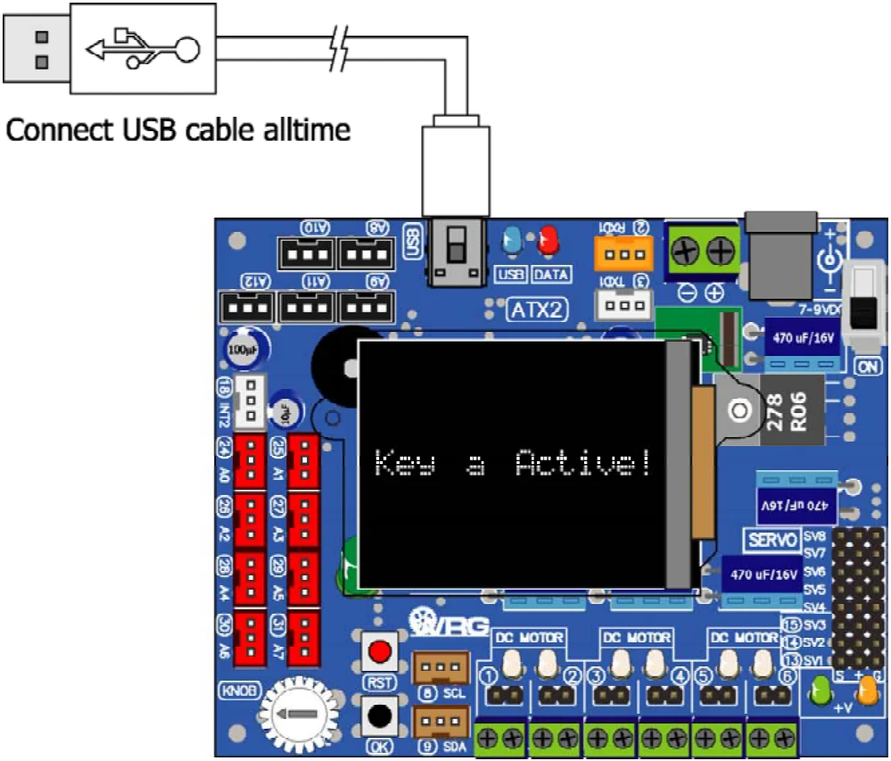

4.2.7.5 uart_getkey
This is data reading function from receiver’s buffer of UART0
Syntax
char uart_getkey(void)Return value
- “0” : no data received
- data : received character in ASCII code
Example 4-19
#include <ATX2.h>
void setup()
{
glcdMode(1); // Set display rotation mode 1
setTextSize(2); // Set text size 2x
}
void loop() // Main loop
{
glcdClear();
if(uart_available()) // Received data checking
{
if(uart_getkey()=='a') // Key a is pressed ?
{
glcd(3,1,"Key a Active!"); // Show message to response
sleep(2000); // Delay 2 seconds
}
else
{
glcdClear(); // Clear screen
}
}
}Note Using uart() function to send data out from UART0 and uart_getkey() function to get character, baud rate is set to 9,600 bit per second, 8-bit data and none parity checking automatically. It is default value. If requires to change baud rate, have to use uart_set_baud function.
For running this sketc h, still connec t the USB c able after upload ing. Open the
Serial Monitor by c lic king on

button or choose at menu Tools > Serial Monitor
Wait a moment, The Serial Monitor is appeared and shows the messages following the picture below. Click to mark at Auto Scroll box and select No line ending. Last box is selected to 9600 Baud.

After ATX2 board gets the a character, it shows message Key a Active! on th color GLCD screen.

Original manual, pages 70–71